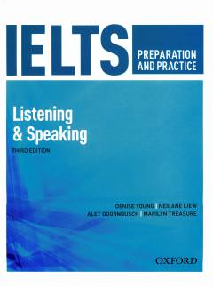

OIIELTS Listening va Speaking bo'limlariga tayyorgarlik ko'rish uchun amaliy qo'llanma.
Ushbu kitob IELTS imtihonining tinglab tushunish (Listening) va gapirish (Speaking) ko'nikmalarini oshirish hamda amaliy mashqlar qilish uchun mo'ljallangan. Unda imtihon formatlari, strategiyalar, namunali testlar va ularning javoblari batafsil yoritilgan.